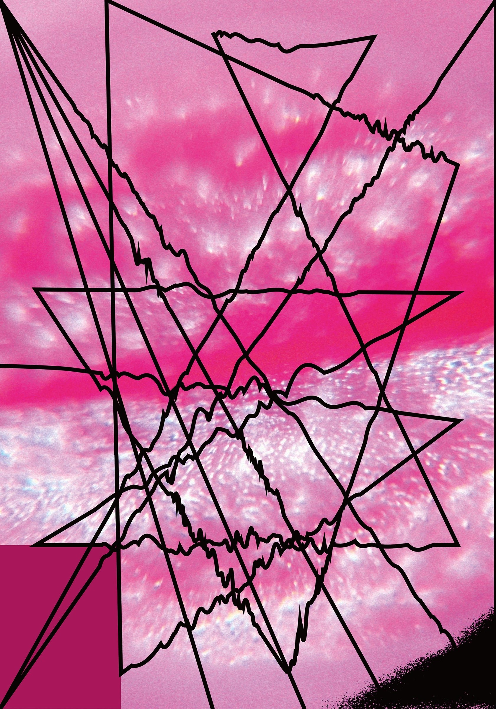
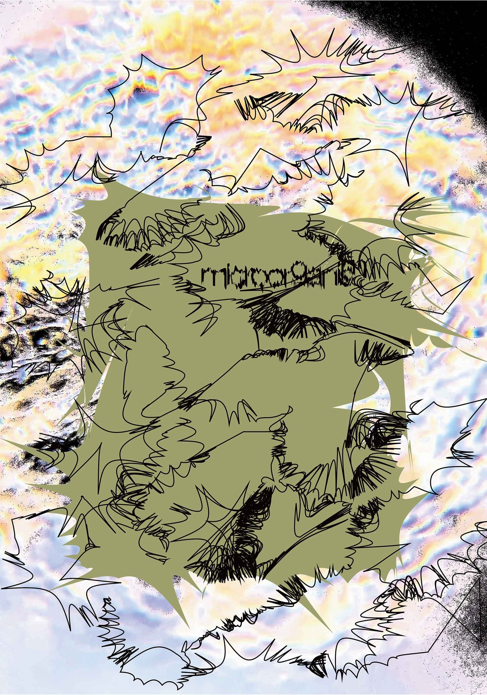
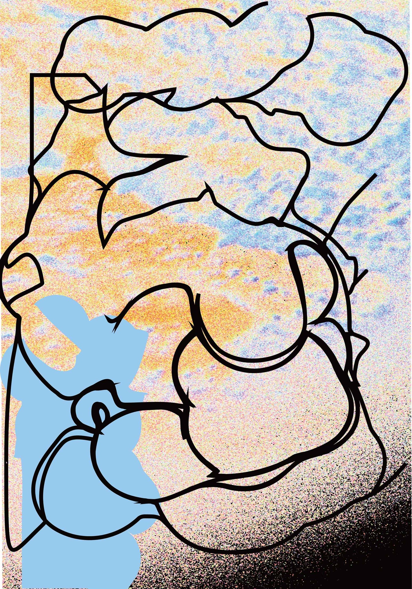
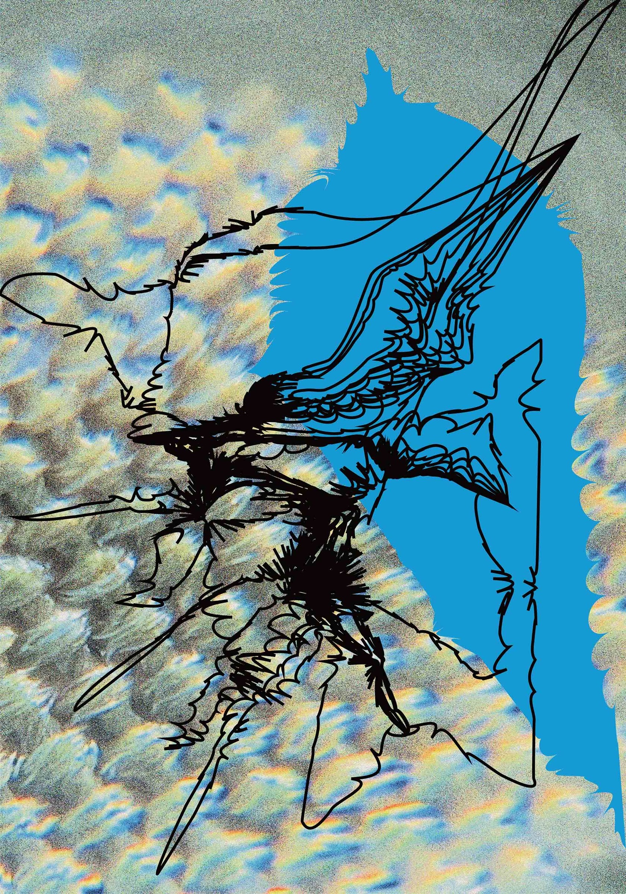
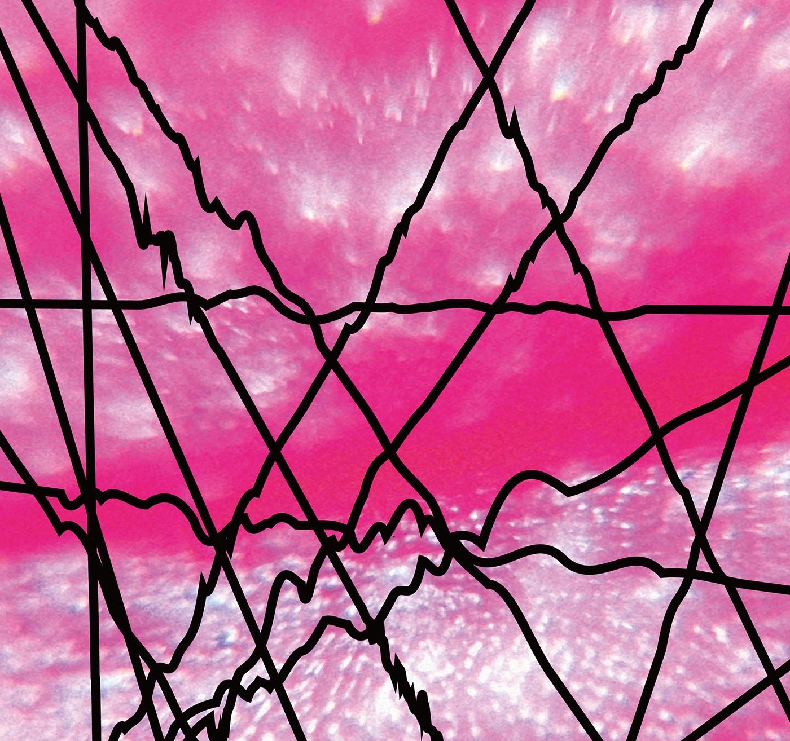
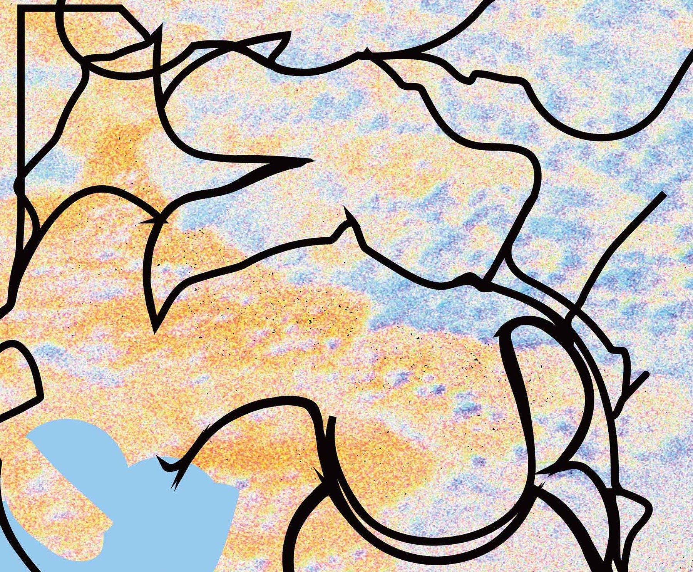
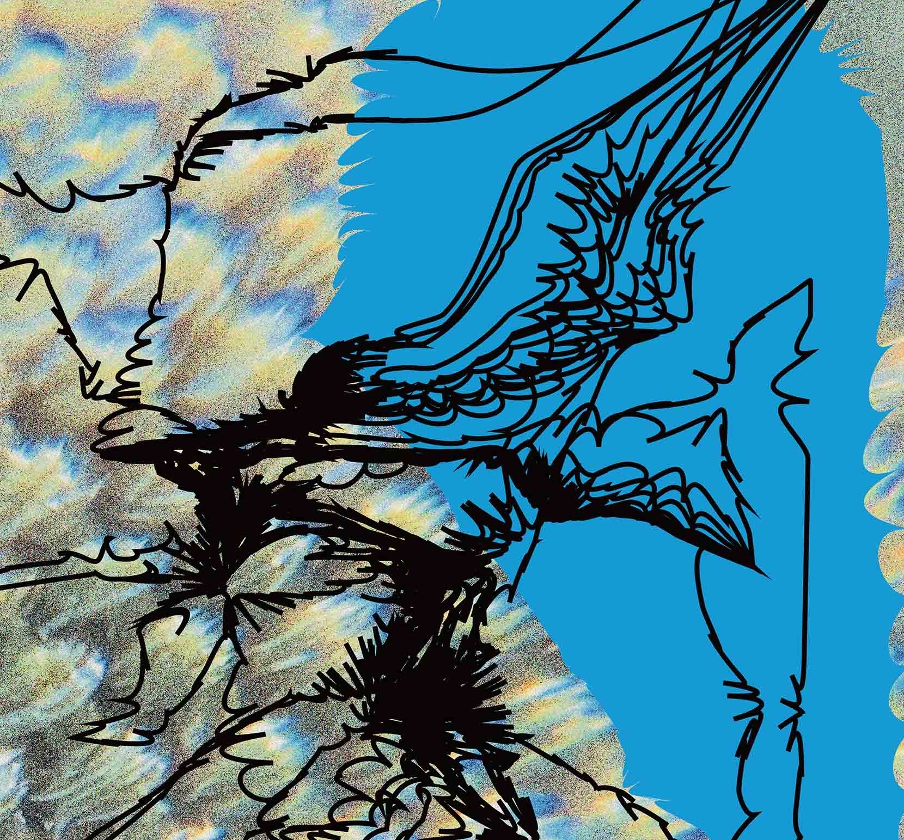

Microscopic
Explorations
An experimental series combining close-up photographs taken through a microscope lens with drawn lines, exploring the relationship between what I observe and what I feel.


About
the series
I photograph objects through a microscope lens attached to a phone, then use lines to record my impressions of each image. The lines are drawn digitally, in Procreate and Illustrator.
Each piece is an experiment in how looking closely changes what a familiar thing feels like.
Role — Photography, drawing
Tools — Phone with microscope lens, Procreate, Illustrator


Details
Crops from three of the compositions, to show the line work up close.



Photography and drawing — Chian-Pei Yang
Medium — Microscope-lens photography, digital drawing
Format — Digital works